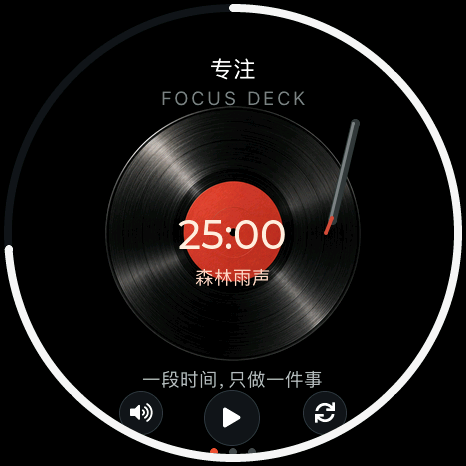
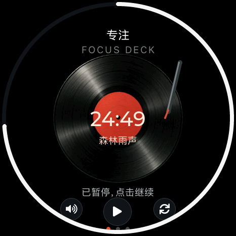
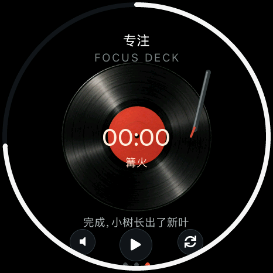

<!doctype html><html lang="zh-CN"><meta charset="utf-8"><meta name="viewport" content="width=1080"><title>专注唱片机</title><link rel="stylesheet" href="style.css">
    <main class="poster hero-page" data-number="12"><header><div class="brand">soRound OS <span>明天 · 正式版见</span></div><div class="kicker">11 / 新应用 · 专注</div><h1>放一张唱片，<br>专心一会儿。</h1><p class="sub">25 分钟，配一点雨声、海浪或篝火声。</p></header><div class="content"><div class="hero"><figure class=""><figcaption></figcaption></figure></div><div class="mini-row"><figure class=""><figcaption>开始</figcaption></figure><figure class=""><figcaption>暂停 / 继续</figcaption></figure><figure class=""><figcaption>完成，长出新叶</figcaption></figure></div></div><footer><span>原生 UI 渲染 · 音景为离线合成环境声</span><span>12 / 10.23</span></footer></main></html>